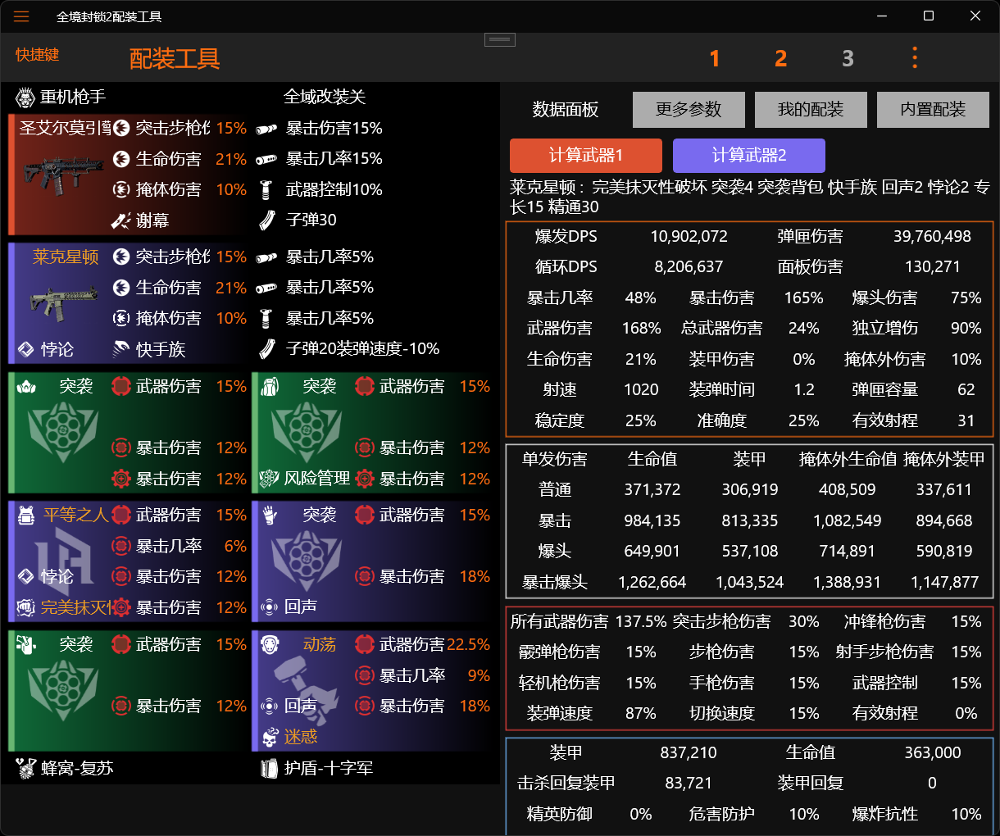

配装编辑
3 把武器、6 件装备，以及天赋、词条、配件、专长、技能、全域改装等自由搭配
《全境封锁2》配装编辑与伤害计算工具，提供网页版和客户端版（Windows、Android、iOS、macOS）。
3 把武器、6 件装备，以及天赋、词条、配件、专长、技能、全域改装等自由搭配
DPS、单发伤害（含猎头）、暴击、爆头、技能属性等结果，支持自动与手动计算
保存/加载配装，支持文件导入导出、分享链接与二维码
武器数据、天赋列表、品牌加成、奇特/具名装备、装备搜索

https://division2buildtool.github.io/b/{code}。对方打开后会自动应用这套配装。配装页支持以下快捷键，点击页面上的 ? 也可以查看：
| 按键 | 功能 |
|---|---|
1 / 2 / 3 |
打开武器选择 |
Shift + 1 / 2 / 3 |
显示或隐藏对应武器 |
Q W A S Z X |
选择六件装备 |
Alt + 1 ~ 3 |
计算对应武器 |
F1 ~ F4 |
切换结果面板 |
Ctrl + S |
保存配装 |
? |
打开快捷键说明 |
Esc |
关闭弹层 |
| 系统 | 最低版本要求 | 推荐版本要求（部分功能需求） |
|---|---|---|
| Windows (x64) | Windows 10 版本 1809 | Windows 10 版本 1809 |
| Android | Android 5.0 | Android 7.0 |
| iOS | iOS 11 | iOS 14 |
| macOS | macOS 10.15 | macOS 11 |